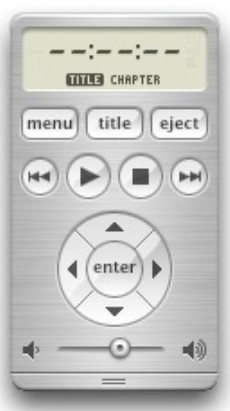

UI e UX
Usabilidade e Experiência do Usuário
Jefferson Mariano de SouzaUm dia desses...

Qual é o correto?
Por que?
Experiência do Usuário
O que é UX?

- Termo criado por Don Norman nos anos 90
Evolução com o passar do tempo

O que tem dentro da Experiência do Usuário?
Experiência do Usuário é mais que usar o produto
A usabilidade de um produto
Usabilidade não é só UI
Preciso usar?
- Por que o usuário escolheria o seu produto ou serviço?
- Que dor/problema ele resolve?
- Ele é necessário?
- Faz diferença?
Consigo usar?
- O que o usuário pode fazer com o seu produto ou serviço?
- A usabilidade é boa? (é fácil e simples de usar?)
- É prazeroso?
- Dá vontade de usar de novo?
Quero usar?
- Foi criado de forma acessível e visualmente agradável para o usuário?
- Deixa as pessoas com vontade de usá-lo, de comprá-lo?
UX no mundo real
Princípios
- Visibilidade
- Feedback
- Restrições
- Mapeamento
- Consistência
- Affordance
Visibilidade
O que eu posso fazer?
Como eu posso fazer?
O que vai acontecer?

Feedback
áudio, tátil, visual ou a combinação destes

Restrições

Mapeamento
Relacionar com o mundo real

Consistência
Operações similares com elementos similares para realizar tarefas semelhantes
Affordance
Saber como usar por ser óbvio